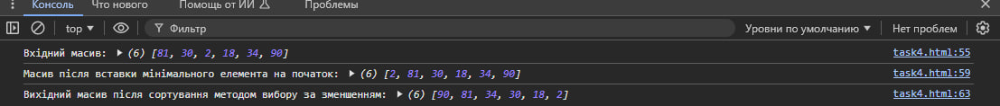

Програмний код
// Функція для генерації масиву псевдовипадкових чисел
// Вона приймає три параметри:
// size - кількість елементів масиву
// min - мінімальне значення
// max - максимальне значення
function generateRandomArray(size, min, max) {
const arr = []; // Створюємо порожній масив для зберігання чисел
// Генеруємо випадкові числа і додаємо їх в масив
for (let i = 0; i < size; i++) {
arr.push(Math.floor(Math.random() * (max - min + 1)) + min); // Додаємо випадкове число в масив
}
return arr; // Повертаємо згенерований масив
}
// Функція для знаходження мінімального елемента в масиві і вставки його на початок
// Вона приймає масив як параметр
function insertMinAtBeginning(arr) {
// Знаходимо мінімальне значення в масиві
const minValue = Math.min(...arr); // Використовуємо spread оператор, щоб передати елементи масиву в Math.min
// Знаходимо індекс мінімального елемента
const minIndex = arr.indexOf(minValue);
// Видаляємо мінімальний елемент з масиву
arr.splice(minIndex, 1); // splice видаляє елемент за індексом
// Додаємо мінімальний елемент на початок масиву
arr.unshift(minValue); // unshift додає елемент на початок масиву
return arr; // Повертаємо масив з мінімальним елементом на початку
}
// Функція для сортування масиву методом вибору за зменшенням
// Приймає масив як параметр
function selectionSortDescending(arr) {
const n = arr.length; // Отримуємо довжину масиву
// Алгоритм сортування методом вибору
for (let i = 0; i < n - 1; i++) {
let maxIndex = i; // Спочатку вважаємо, що максимальний елемент на поточній позиції
// Шукаємо найбільший елемент в залишку масиву
for (let j = i + 1; j < n; j++) {
if (arr[j] > arr[maxIndex]) {
maxIndex = j; // Якщо знайшли більший елемент, оновлюємо індекс максимального елемента
}
}
// Якщо максимальний елемент не на поточній позиції, обмінюємо їх місцями
if (maxIndex !== i) {
[arr[i], arr[maxIndex]] = [arr[maxIndex], arr[i]]; // Обмін значеннями між елементами
}
}
return arr; // Повертаємо відсортований масив
}
// Основна функція для виконання задач
function main() {
// Крок 1: Отримуємо розмір масиву від користувача
// Використовуємо prompt для введення користувачем кількості елементів масиву
const size = parseInt(prompt("Введіть кількість елементів масиву:"));
const min = 1, max = 100; // Встановлюємо мінімальне і максимальне значення для випадкових чисел
// Генеруємо масив псевдовипадкових чисел
let arr = generateRandomArray(size, min, max);
console.log("Вхідний масив:", arr); // Виводимо згенерований масив у консоль
// Крок 2: Знаходимо мінімальний елемент і вставляємо його на початок
arr = insertMinAtBeginning(arr);
console.log("Масив після вставки мінімального елемента на початок:", arr); // Виводимо результат після вставки мінімального елемента на початок
// Крок 3: Сортуємо масив методом вибору за зменшенням
const sortedArr = selectionSortDescending([...arr]); // Створюємо копію масиву для сортування, щоб не змінювати оригінальний масив
console.log("Вихідний масив після сортування методом вибору за зменшенням:", sortedArr); // Виводимо відсортований масив
}
// Викликаємо основну функцію, щоб все виконати
main();
Скріншот виконання
